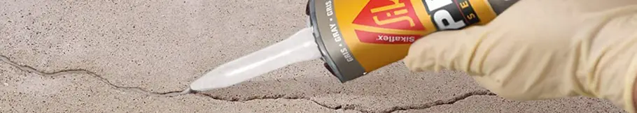

Menambal Tembok yang Retak Menggunakan Pasta Penambal Tembok

Mendekorasi dan merawat rumah memang tidak ada habisnya. Mulai dari pengecatan berkala, upgrade beberapa bagian rumah, hingga ganti furnitur, terutama saat momen liburan. Satu hal yang bisa mengganggu keindahan dekorasi rumah adalah tembok yang retak. Biasanya, bila tembok yang retak ini terletak di ruang tamu, para bapak harus segera mengatasinya sebelum dapat komplain dari istri tercinta.
Penyebab Tembok Retak
Tembok retak menjadi masalah di berbagai tempat, terutama bila kita tinggal di daerah dimana tanahnya bergerak atau kerap terjadi gempa bumi. Keretakannya pun bisa jadi beragam, mulai dari retak parah hingga membutuhkan bantuan tenaga ahli, hingga retak ringan yang hanya mengganggu secara estetik. Nah, untuk kategori kedua ini, kita dapat mengatasinya sendiri.
Memperbaiki Tembok Retak Dengan Cepat
Lantas, bagaimana cara mengatasi tembok retak tanpa bantuan tenaga ahli? Sebelumnya, sekali lagi, retak tembok yang bisa kita benahi sendiri adalah tipe retak yang tipis ya sehingga hanya mengganggu secara estetika. Bila keretakannya sudah parah, kita harus langsung segera menghubungi tenaga ahli.
Saat ini, alat untuk membenahi keretakan tembok ini banyak dijual di berbagai marketplace. Kali ini, kita coba beli paket alatnya yang berisi: krim untuk perbaikan retak dinding, corong khusus untuk pengaplikasian, lempeng plastik untuk meratakan, serta amplas.
Cara Menggunakan Pasta Penambal Tembok Retak
- Kita buka dulu segel pada pasta untuk memperbaiki retak dinding. Pasta ini berbentuk mirip pasta gigi namun dengan ukuran tube yang sedikit lebih besar.
- Kemudian, kita pasang corong untuk mengaplikasikan pasta tersebut ke dalam retakan tembok.
- Kita bersihkan tembok yang akan ditambal terlebih dahulu. Bila tembok tertutup debu, kita bisa menggunakan kain kering dan bersih. Hal ini penting untuk memastikan agar tambalan lebih awet.
- Setelahnya kita aplikasikan pasta secara merata ke dalam retakan tembok.
- Selanjutnya, kita bisa gunakan lempeng plastik untuk meratakan hasil tambalan. Perlu cukup telaten di tahap ini ya, agar tambalannya rata dan hasilnya optimal.
- Kemudian, tambalan kita diamkan untuk beberapa saat. Tim Mas Tukang coba mendiamkannya selama semalaman dan tambalan pun sudah keras.
- Bila diperlukan, kita bisa meratakan tambalan menggunakan amplas.
- Tembok yang sudah ditambal ini siap untuk dilapisi cat dan ruangan pun kembali estetik.
Video Penggunaan Pasta Penambal Tembok Retak
Bagaimana, mudah bukan menambal tembok retak di rumah? Video singkat tentang menambal tembok retak menggunakan paket krim penambal dapat ditonton dibawah ini. Semoga bermanfaat!